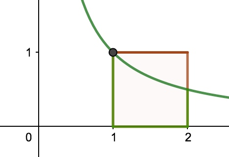

蒙特卡罗方法（也常称之为 MC）也叫统计模拟方法，它使用随机数（或伪随机数）来解决问题，是一类重要的数值计算方法。该方法的名字来源于世界著名的赌城蒙特卡罗，而蒙特卡罗方法正是以概率为基础的方法。
由概率定义知，某事件的概率可以用大量试验中该事件发生的频率来估算，当样本容量足够大时，可以认为该事件的发生频率即为其概率。蒙特卡罗方法正是基于这个思想。一个简单的例子可以解释蒙特卡罗方法，假设我们需要计算一个不规则图形的面积，那么图形的不规则程度和分析性计算（比如积分）的复杂程度是成正比的。而采用蒙特卡罗方法是怎么计算的呢？首先你把图形放到一个已知面积的方框内，然后假想你有一些豆子，把豆子均匀地朝这个方框内撒，散好后数这个图形之中有多少颗豆子，再根据图形内外豆子的比例来计算面积。当你的豆子越小，撒的越多的时候，结果就越精确。
蒙特卡罗方法出现后很长一段时间都不太受到关注，直到计算机的出现，使大量模拟变得简单，这种方法才重新被关注起来。
下面我们使用模特卡罗方法解决几个有趣的问题：
圆周率 \(\pi\) 的计算
圆周率的计算常用的方法是割圆法，这里我们使用蒙特卡罗方法很容易得出，这也是蒙特卡罗算法最经典的应用。假设我们有一个半径为 \(r\) 的圆形，很容找到它外切的边长为 \(2r\) 的正方形：

我们知道正方形的面积为 \(2r\times 2r=4r^2\) ，圆的面积为 \(\pi r^2\)，面积之比为：
\[
p = \frac{s(\text{circle})}{s(\text{square})} = \frac{\pi r^2}{4r^2} = \frac{\pi}{4}
\]
现在使用蒙特卡罗方法生成 \(n\) 对 \([-r,+r]\) 内的随机数（包含x、y两个坐标），计算是否在圆内（与圆心的距离与 \(r\) 比较），若有 \(m\) 个点落到圆内，我们可以认为落到圆内的概率与圆与正方形面积之比相等，即：
\[
\frac{m}{n} = \frac{\pi}{4} \quad\Rightarrow\quad \pi = \frac{4m}{n}
\]
通过这种方法，随着 \(n\) 的增大，\(\pi\) 会越来越精确。
自然对数 \(\mathbf e\) 的计算
使用蒙特卡罗方法计算自然对数便不那么直观了，我们来考虑一下如下的定积分：
\[
S = \int_1^2 \frac 1 x dx
\]
我们将这个函数画出

如上图所示上述定积分的值即是绿色曲线与正方形围成的面积。我们通过牛顿莱布尼兹公式求定积分为：
\[
S = \ln(x)\Big|_1^2 = \ln(2) - \ln(1) = \ln(2)
\]
使用蒙特卡罗方法求解这个面积，先在所标矩形内取 \(n\) 对随机点 \((x_1,y_1),(x_2,y_2),...,(x_n,y_n)\)，即 \(x_i\) 取值范围为 \([1,2]\)，\(y_i\) 取值范围为 \([0,1]\)。满足
\[
y_i < \frac 1 {x_i}
\]
的点将在所要求的面积之内，所以正方形内曲线下面的面积与正方形面积之比为落在曲线下方区域与全部随机点个数之比。假设有 \(m\) 个点满足条件，即：
\[
\frac{m}{n} = \frac{\ln(2)}{1}\quad\Rightarrow\quad \log_e 2 = \frac m n \quad\Rightarrow\quad e = 2^{m/n}
\]
定积分的计算
使用蒙特卡罗计算定积分有两种方法：一种就是上面的那种方法“面积法”，定积分的值便是阴影部分的面积，这里不再叙述。另一种方法是“期望法”现在来介绍这种方法：
看如下的积分：
\[
\theta = \int_a^b f(x)dx
\]
如果我们很难求出 \(f(x)\) 的原函数，那么这个积分比较难求解。当然我们可以通过蒙特卡罗方法来求解近似值。假设我们函数图像如下图：

原函数的积分是函数 \(f(x)\) 下方与绿色区域的面积。一个简单的近似求解方法是在 \([a,b]\) 之间随机采样一个点。比如 \(x_1\)，然后用 \(x_1\) 代表 \([a,b]\) 内所有的 \(f(x)\) 的值。那么上面的定积分的近似求解为：
\[
(b-a)f(x_1)
\]

也就是图中阴影的面积。显然，用一个值代表 \([a,b]\) 区间上所有的 \(f(x)\) 的值，这个假设太粗糙。那么我们可以采样 \([a,b]\) 区间的 \(n\) 个值：\(x_1,x_2,...x_{n}\) ,用它们的均值来代表 \([a,b]\) 区间上所有的 \(f(x)\) 的值：
\[
\overline f(x) = \frac 1 n \sum_{i=1}^{n} f(x_i)
\]
这样我们上面的定积分的近似求解为:
\[
(b-a)\overline f(x) = \frac{b-a}{n} \sum_{i=1}^{n} f(x_i)
\]

如图中矩形所示，这个假设比之前的稍好一些，但是它隐含了一个假定，即 \(x\) 在 \([a,b]\) 之间是均匀分布的，而绝大部分情况，\(x\) 在 \([a,b]\) 之间不是均匀分布的。如果我们用上面的方法，则模拟求出的结果很可能和真实值相差甚远。而如果我们找到一个分布，使得它能在值较大的地方采集到更多的样本，则能更好地逼近结果。所以我们要对采样进行加权，这个权重就是重要性权重。
重要性采样 Importance Sampling
假设原函数 \(f(x)\) 也许本身就是定义在一个分布之上的，我们定义这个分布为 \(p(x)\)，我们无法直接从 \(p(x)\) 上进行采样，所以另辟蹊径重新找到一个更加简明的分布 \(q(x)\) ，从它进行取样，希望间接地求出 \(f(x)\) 在分布 \(p(x) \) 下的期望。
首先我们知道函数 \(f(x)\) 在概率分布 \(p(x)\) 下的期望为：
\[
\begin{align*}
\mathbb E_p[f(x)] &= \int_{x}^{}f(x) p(x) dx = \int_{x}^{}f(x) \frac{p(x)}{q(x)}q(x)dx\\
&= \int_{x}^{} f(x) w(x) q(x) dx\\
&= \mathbb E_q[f(x) w(x)]
\end{align*}
\]
其中 \(w(x) = \frac{p(x)}{q(x)}\) ，被称为重要性权重。
重要性采样是通过引入重要性权重，将分布 \(p(x)\) 下 \(f(x)\) 的期望变为分布在 \(q(x)\) 下 \(f(x)w(x)\) 的期望，从而可以近似为
\[
\hat f(N) = \frac 1 N \Big( f(x^{(1)}) w(x^{(1)}) + ... + f(x^{(N)})w(x^{(N)}) \Big)
\]
其中 \(x^{(i)},i=1,2,...,N\) 是独立从 \(q(x)\) 中随机抽取的点。
重要性采样也可以在只知道为未归一化的分布 \(\hat p(x)\) 的情况下计算函数 \(f(x)\) 的期望。
\[
\begin{align*}
\mathbb E_p(f(x)) &= \int_x f(x) \frac{\hat p(x)}{Z} dx\\
&= \frac{\int_x f(x) p(x) dx}{\int_x \hat p(x) dx}\\
&\approx \frac{\sum_{i=1}^N f(x^{(i)}) \hat w(x^{(i)})}{\sum_{i=1}^N \hat w(x^{(i)}) }\\
\end{align*}
\]
其中 \(Z\) 为配分函数，\(p(x) = \frac{\hat p(x)}{Z}\)；\(\hat w(x) = \frac{\hat p(x)}{q(x)}\)，\(x^{(i)}\) 为独立从 \(q(x)\) 中随机抽取的点。
概率分布采样
蒙特卡罗方法关键是获得 \(x\) 的概率分布，基于概率分布去采样 \(n\) 个 \(x\) 的样本集代入蒙特卡罗式子中求解。对于常见均匀分布 \(\mathbf U(0,1)\) 是最容易采样的，一般可以通过各种伪随机数发生器可以产生指定范围内的均匀分布。而其他常见的概率分布，无论是离散的分布还是连续的分布，它们的样本都可以通过均匀分布 \(\mathbf U(0,1)\) 的样本转换而得。比如二维正态分布的样本 \((Z_1,Z_2)\) 可以通过对独立采样 \(\mathbf U(0,1)\) 得到的样本 \((X_1,X_2)\) 通过如下的式子转换而得：
\[
Z_1=\sqrt{-2\ln(X_1)} \cos(2\pi X_2)\\
Z_2=\sqrt{-2\ln(X_1)} \sin(2\pi X_2)\\
\]
其他一些常见的连续分布，比如t分布，F分布，Beta分布，Gamma分布等，都可以通过类似的方式从 \(\mathbf U(0,1)\) 转化得到。
这里介绍几个将均匀分布 \(\mathbf U(0,1)\) 转换其他分布的常见方法，并运用于各种分布的采样：
连续型变量的逆变换法 Inverse Transform Method For Continuous Variable
先来看看 CDF 和 PDF 的定义：对于随机变量 \(X\)，如下定义的函数 \(F_X(x)\)：
\[
F_X(x) = P\{X \le x\},\quad -\infty \lt x \lt \infty
\]
称为 \(X\) 的累积分布函数（CDF，Cumulative Distribution Function）。已知累积分布函数满足三个性质：
有界性：
\[
\begin{align*}
\lim_{x\rightarrow -\infty} F_X(x) &= 0\\
\lim_{x\rightarrow \infty} F_X(x) &= 1\\
\end{align*}
\]单调性：
\[
F_X(x_1)\le F_X(x_2) \quad \text{if }x_1 \le x_2
\]右连续性：
\[
\lim_{x\rightarrow x_0^+} F_X(x) = F_X(x_0)
\]
对于连续型随机变量 \(X\) 的累积分布函数 \(F_X(x)\)，如果存在一个定义在实数轴非负函数 \(f(x)\)，使得对于任意实数 \(x\)，有下式成立：
\[
F_X(x) = \int_{-\infty}^{x} f(t) dt
\]
则称 \(f(t)\) 为 \(X\) 的概率密度函数（PDF，Probability Density Function）。显然，当概率密度函数存在的时候，累积分布函数是概率密度函数的积分。
由累积分布积分性质我们可以知道：
\[
\begin{equation}
\lim_{x\rightarrow \infty} F(x) = 1\quad\Rightarrow\quad \int_{-\infty}^{\infty} f(t) dt = 1\label{lxri}
\end{equation}
\]
假设我们想生成一个随机变量 \(X\) 具有累积分布函数（CDF）\(F_X(x)\)，我们希望找到一个映射能将均匀分布 \(\mathbf u\sim \text{Uniform}(0,1)\) 转换成服从 \(X\) 分布，即 \(X=T(u)\)，所以有：
\[
F_X(u) = P(X\le u) = P(T(u) \le u) = P(u \le T^{-1}(u)) = T^{-1}(u)
\]
通过这个现象，我们能很容易获得变换函数 \(T(u) = F_X^{-1}(u)\) ，这也就意味着 \(X=T(u) = F_X^{-1}(u)\) 都服从 \(F_X(x)\) 的 CDF 分布。
举例说明一下：假设我们有均匀分布随机函数 \(U(0,1)\) 和累积分布函数：
\[
F(x) = 1-\exp(-\sqrt{x})
\]
为了去求反函数，考虑到 \(F(F^{-1}(u)) = u\)，所以有：
\[
\begin{align*}
F(F^{-1}(u)) = 1-\exp(-\sqrt{F^{-1}(u)}) &= u\\
\exp(-\sqrt{F^{-1}(u)}) &= 1-u\\
\sqrt{F^{-1}(u)} &=-\log(1-u)\\
F^{-1}(u) &= (\log(1-u))^2
\end{align*}
\]
再给另一个例子，我们累积分布函数在 \(x\ge 0\) 时使用指数分布 \(F_X(x) = 1-\exp(-\lambda x)\) ，其他情况为0。我们可以得到反函数通过：
\[
1-\exp(-\lambda x) = y \quad\Rightarrow\quad x = F^{-1}(y) = -\frac{1}{\lambda} \ln(1-y)
\]
注意这里如果我们用 \(y\) 代替 \(1-y\) 并不会对分布产生影响。
离散型变量的逆变换法 Inverse Transform Method For Discrete Variable
考虑到在区间 \([0,1]\) 间的均匀分布 \(U\) ，它的累积分布函数为
\[
F_U(x) = P(U\le x) = \left \{\begin{array}\\0 &\text{if }x\lt 0\\x&\text{if }x=0\\1&\text{if }x\gt 1\\\end{array}\right .
\]
假设 \(X\) 是离散变量，\(p_i = P(X=x_i)，i=1,2,...,i\)。如果 \(U\) 是一个均匀分布的随机变量，若 \(0\le a \le b\)，有
\[
P(a\le U\le b) = P(U\le b) - P(U \le a) = F_U(b) - F_U(a) = b - a
\]
因此对每个 \(n\) 有
\[
P(p_1+p_2+...+p_{n-1} \le U \le p_1 + p_2 + ... + p_{n-1} + p_n) = p_n
\]
现在令 \(Y=\Phi(U)\) 是关于随机变量 \(U\) 的方程，定义为：
\[
Y = \Phi(U) = \left \{\begin{array}\\ x_1 & \text{if }U\le p_1\\ x_2 & \text{if }p_1 \le U\le p_2 \\\vdots&\vdots\\x_n & \text{if }p_1+p_2+...+p_{n-1}\le U\le p_1 + p_2 + ... + p_{n-1}+ p_n\\\end{array}\right .
\]
这样 \(Y\) 有和 \(X\) 同样的分布，因此，如果 \(u_1,...,u_k\) 是从均匀分布中取样而得，\(\Phi(u_1),...,\Phi(u_k)\) 就是从 \(X\) 的分布中取样。
逆变换法采样
在计算机模拟时，我们所说的抽样，其实是指从一个概率分布中生成观察值（observations）的方法。而这个分布通常是由其概率密度函数（PDF）来表示的。而且，即使在已知PDF的情况下，让计算机自动生成观测值也不是一件容易的事情，我们可以用上面逆变换法的方式通过 PDF 进行积分来得到概率分布的 CDF，然后再得到 CDF 的反函数 \(F_X^{-1}(x)\)，如果你想得到 \(m\) 个观察值，则重复下面的步骤 \(m\) 次：
- 从 \(\mathbf U(0,1)\) 中随机生成一个值（前面已经说过，计算机可以实现从均匀分布中采样），用 \(u\) 表示。
- 计算 \(F^{−1}(u)\) 的值 \(x\)，则 \(x\) 就是从 \(f(x)\) 中得出的一个采样点。
假设我们希望在下面的 PDF 中抽样：
\[
f(x) = \left \{ \begin{array}\\
8x\quad &\text{if }\quad 0\le x\lt 0.25\\
\frac 8 3 - \frac 8 3 x\quad &\text{if }\quad 0.25\le x\le 1\\
0\quad &\text{otherwise}\\
\end{array} \right .
\]
可以算得相应的 CDF 为：
\[
F(x) = \int^x_{-\infty} f(x) \mathbf dx= \left \{ \begin{array}\\
0,\quad & \text{if }\quad x\lt 0\\
4x^2,\quad &\text{if }\quad 0\le x\lt 0.25\\
\frac 8 3 x - \frac 4 3 x^2 - \frac 1 3\quad &\text{if }\quad 0.25\le x\le 1\\
1\quad &\text{if }\quad x\gt 1\\
\end{array} \right .
\]
在通过 PDF 计算相应CDF 时，为了点的连续加入了常量值。对于 \(u\in [0,1]\)，它的反函数为：
\[
F^{-1}(u) = \left \{ \begin{array}\\
\frac{\sqrt{u}}{2}\quad &\text{if }\quad 0\le u\lt 0.25\\
1 - \frac{\sqrt{3(1-u)}}{2}\quad &\text{if }\quad 0.25\le u\le 1\\
\end{array} \right .
\]
从下图中你可以发现 采样点 与 原始分布 非常吻合：

接受拒绝法 Acceptance-Rejection Method
一般来说逆转换法是第一选择，但是逆转换法有自身的局限性，必须能给出累积分布函数 \(F_X(x)\) 反函数的表达式，这限制了逆变换法的使用范围。当没法给出累积分布函数 \(F_X(x)\) 的逆函数的表达式时，接受拒绝法是另一种选择。它的适用范围比逆变换法要大，只要给出概率密度函数的解析表达式即可，而大多数常用分布的概率密度函数是可以查到的。
假设我们想对 PDF 为 \(p(x)\) 的函数进行采样，但是由于种种原因（例如这个函数很复杂），对其进行采样是相对困难的。另外有一个 PDF 为 \(q(x)\) 的函数则相对容易采样，例如采用 Inverse CDF 方法可以很容易对对它进行采样，甚至 \(q(x)\) 就是一个均匀分布，\(q(x)\) 称之为提议分布（Proposal distribution）。那么，当我们将 \(q(x)\) 与一个常数 \(M\) 相乘之后，可以实现下图所示之关系，即 \(q(x)\) 将 \(p(x)\) 完全“罩住”。

然后重复如下步骤，直到获得 \(m\) 个被接受的采样点：
- 从 \(q(x)\) 中获得一个随机采样点 \(x_i\)
对于 \(x_i\) 计算接受概率（acceptance probability）：
\[
\alpha = \frac{p(x_i)}{Mq(x_i)}
\]从 \(U(0,1)\) 中随机生成一个值，用 \(u\) 表示
如果 \(u \le \alpha\)，则接受 \(x_i\) 作为一个来自 \(p(x)\) 的采样值，否则就拒绝 \(x_i\) 并回到第一步。
我们还是以之前的例子为例，使用接受决绝进行采样，使用 \(Mq(x)=3 - 2x\) 函数作为提议分布，即 \(q(x) = \frac 1 M (3-2x)\)，如下图：
对 \(q(x)\) 函数下面的面积进行归一化求一下 \(M\) 的大小，由 \ref{lxri} 式：
\[
\begin{align*}
\int_{-\infty}^{\infty} f(x) = 1\quad&\Rightarrow\quad \int_{-\infty}^{\infty} \frac 1 M f(x) = 1\\
&\Rightarrow\quad \int_{-\infty}^{0} f(x) + \int_{0}^{1} f(x) + \int_{1}^{\infty} f(x) = 1\\
&\Rightarrow\quad \int_{-\infty}^{0} 0 \mathbf dx + \int_{0}^{1} \frac 1 M (3-2x) \mathbf dx + \int_{1}^{\infty} 1 \mathbf dx = 1\\
&\Rightarrow\quad 0 + \int_{0}^{1} \frac 1 M (3-2x) \mathbf dx + 0 = 1\\
&\Rightarrow\quad \frac 1 M (3x - x^2) \bigg |_0^1 = 1\\
&\Rightarrow\quad \frac 2 M = 1\\
&\Rightarrow\quad M = 2
\end{align*}
\]
所以 \(q(x) = \frac 3 2 - x^2\) ，现在来求 \(q(x)\) 的累积分布函数：
\[
F_X(x) = \left \{ \begin{array} \\
0\quad & x \lt 0\\
-\frac 1 2 x^2 + \frac 3 2 x\quad &\text{if }\quad 0\le x\le 1\\
1\quad & x \gt 1\\
\end{array}\right .
\]
所以 \(q(x)\) 的分布函数可以由均匀分布通过反函数求得：
\[
F^{-1}_X(u) = \frac 3 2 - \sqrt{\frac{9}{4} - 2u} \quad u\in[0,1]
\]
现在能通过 Inverse Transform 方法对 \(q(x)\) 进行取样，取样后计算 \(\alpha\)，再取随机数 \(u\) 与 \(\alpha\) 比较决定接受拒绝，代码如下：
import numpy as np
from matplotlib import pyplot as plt
import math
# 均匀取样 10000 个数据点
uniform_sample = np.random.rand(30000)
# 利用Inverse Transform 将 10000 个样本转换成满足 q 分布样本
q_sample = [3.0/2 - math.sqrt(9.0/4 - 2*x) for x in uniform_sample]
# 计算样本 p 的值
p = [8*x if x >=0 and x <0.25 else 8.0/3 - 8.0/3 * x for x in q_sample]
# 计算样本 q 的值
q = [3.0/2 - x for x in q_sample]
# 计算样本 a 的值
a = np.array(p)/(3*np.array(q))
# 接受拒绝样本
accept_sample = [x for i,x in enumerate(q_sample) if np.random.rand() <= a[i]]
# 画图，原始分布
x_d = np.linspace(0,1,5000)
plt.plot(x_d,[8*x if x >=0 and x <0.25 else 8.0/3 - 8.0/3 * x for x in x_d],color="r",linewidth=3)
# 画图，拒绝采样后的分布
cnts, bins = np.histogram(accept_sample,bins=np.linspace(0,1,21),density=True)
bins = (bins[:-1] + bins[1:]) / 2
plt.plot(bins, cnts,color="g",linewidth=3)
plt.show()
如下图，采样效果还是挺好的：

这里还有个更简单的做法，提议分布选最简单的均匀分布，如 \(q(x) = 1，M=3\) 。
自适应的拒绝采样 Adapter Reject Sample
前面介绍的拒绝采样中，如果 \(p(x)\) 与 \(q(x)\) 不是很接近会使 \(\alpha\) 很小，大多数的采样都会被拒绝掉，会影响采样效率。我们需要找到一个与 \(p(x)\) 很接近的 \(q(x)\) ，如果函数是 log 式凹函数（log-concave，我们通常理解的凸函数，或下凹函数）的话，那么我们就可以采样自适应的拒绝采样方法。
有一个的漂亮的思路是用分段的直线将分布包络起来进行采样.用分段直线进行包络时,如果分布曲线是凹的（开口向下,concave）,那么该曲线上的点的切线都将在该曲线的上方.于是在该曲线上找若干个点,并用这些点的切线,就可以将该曲线包络住。

大多数分布都具有指数的形式,不一定是凹函数,取对数后分布形式会变的简洁易于找切线.此时对分布的要求就转为取对数后是凹函数即可。
总体步骤如下：
给出分布函数 PDF 的对数函数 \(f(x)=\log(p(x))\),及其对应的一阶导数函数 \(f’(x)\)；

给定几个初始点，求出这几个初始点的切线，并计算切线与切线的交点。如果有边界，边界一般为垂直于横轴的直线，要计算切线与边界的交点；

我们来看看交点的求法，假设初始点开始有 \(n\) 个为 \((x_0,x_1,...x_i,...,x_{n-1})\) ，我们知道曲线在 \(x_i\) 处的一阶导数值为该点切线的斜率，用 \(\text{fprima}_{x_i}\) 表示。假设现在需要计算曲线在初始点 \(x_i\) 与相邻初始点 \(x_{i+1}\) 的切线的交点，首先设过 \(x_i\) 和 \(x_{i+1}\) 点的切线方程为：
\[
\begin{align}
y &= \text{fprima}_{x_i} x + b_i\label{yt1}\\
y &= \text{fprima}_{x_{i+1}} x + b_{i+1} \label{yt2}\\
\end{align}
\]将 \(x_i\) 代入 \(f(x)\) 得到该点纵坐标的值，设为 \(f_{x_i}\)。将点 \((x_i,\text{f}_{x_i})\) 和 \((x_{i+1},\text{f}_{x_{i+1}})\) 分别代入两条切线方程求出常数项 \(b_i\) 和 \(b_{i+1}\) ：
\[
\begin{align*}
\left \{ \begin{array}\\
\text{f}_{x_i} = \text{fprima}_{x_i} x_i + b_i\\
\text{f}_{x_{i+1}} = \text{fprima}_{x_{i+1}} x_{i+1} + b_{i+1} \\
\end{array} \right .&\Rightarrow \left \{ \begin{array}\\
b_i = \text{f}_{x_i} - \text{fprima}_{x_i} x_i\\
b_{i+1} = \text{f}_{x_{i+1}} - \text{fprima}_{x_{i+1}} x_{i+1}
\end{array} \right.
\end{align*}
\]已知 \ref{yt1} 与 \ref{yt2} 两条切线方程的解即为交点的坐标，所以：
\[
\begin{align}
\hat x_i &= \frac{b_{i+1}-b_i}{\text{fprima}_{x_i} - \text{fprima}_{x_{i+1}}} = \frac{{\text{f}_{x_{i+1}} - \text{f}_{x_i}} + \text{fprima}_{x_i} x_i- {\text{fprima}_{x_{i+1}} x_{i+1}}}{\text{fprima}_{x_i} - \text{fprima}_{x_{i+1}}} \label{xf}\\
\hat y_i &= \text{fprima}_{x_i} \hat x_i + b = \text{fprima}_{x_i} \hat x_i + \text{f}_{x_i} - \text{fprima}_{x_i} x_i = \text{fprima}_{x_i} (\hat x_i - x_i) + \text{f}_{x_i} \label{yf}\\
\end{align}
\]通过式 \ref{xf} 我们可以求出相邻切线之间的切点的横坐标 \((\hat x_0,\hat x_1,...,\hat x_{n-2})\) （ \(n\) 个切线相邻切线直接交点最多为 \(n-1\) 个），再加上前后两个边界线的横坐标，便得到了所有交点的横坐标：x
\[
\hat x^*=(\hat x^*_0,\hat x^*_1,...,\hat x^*_{n})=(0,\hat x_0,\hat x_1,...,\hat x_{n-2},1)
\]现在再来看所有交点的纵坐标，除与边界的交点外，相邻切线的交点可以由 \ref{yf} 式得到。切线与边界 \(x=0\) 的交点的纵坐标，也就是第一条切线方程与 \(x=0\) 的解：
\[
\begin{equation}
\hat y^*_0 = b_0 = \text{f}_{x_0} - \text{fprima}_{x_0} x_0 = \text{fprima}_{x_0} (0- x_0) + \text{f}_{x_0} \label{yf_1}
\end{equation}
\]切线与边界 \(x=1\) 的交点的纵坐标，也就是第 \(n-1\) 条（最后一条）切线方程与 \(x=1\) 的解：
\[
\begin{equation}
\hat y^*_{n} = \text{fprima}_{x_{n-1}} + b_{n-1} = \text{fprima}_{x_{n-1}} + \text{f}_{x_{n-1}} - \text{fprima}_{x_{n-1}} x_{n-1} = \text{fprima}_{x_{n-1}}(1-x_{n-1}) + \text{f} _{x_{n-1}} \label{yf_2}
\end{equation}
\]结合 \ref{yf}、\ref{yf_1} 和 \ref{yf_2} 式：
\[
\hat y^*_j = \left \{ \begin{array}\\
\text{fprima}_{x_0} (0- x_0) + \text{f}_{x_0} \quad &\text{if}\quad j=0\\
\text{fprima}_{x_i} (\hat x_i - x_i) + \text{f}_{x_i} \quad &\text{if}\quad 1\le j \le n-1;i=j-1\\
\text{fprima}_{x_{n-1}}(1-x_{n-1}) + \text{f} _{x_{n-1}} \quad &\text{if}\quad j = n
\end{array}\right .
\]很容易统一纵坐标的求法
\[
\hat y^*_j = \text{fprima}^* (\hat x^* - x^*) + \text{f}_{x^*}\\
\]其中：
\[
\begin{align*}
\text{fprima}^* &= (\text{fprima}_{x_{0}}，\text{fprima}_{x_{0}}，\text{fprima}_{x_{1}},...,\text{fprima}_{x_{n-1}})\\
x^* &=(x_0,x_0,x_1,...,x_{n-1})
\end{align*}
\]将分段直线取指数转换为对应的指数曲线，分别计算各段指数曲线的定积分。也就是计算各段曲线下覆盖的面积。累积且归一化后得到一个分段 CDF；

上面已经求出每一条切线方程，设初始点 \(x_i\) 对应的切线方程为：
\[
\begin{align}
y &= \text{fprima}_{x_i} (x - x_i) + \text{f}_{x_i} \label{ytx1}\\
\end{align}
\]指数曲线为：
\[
\begin{align}
f_{x_i}(x) = \exp[\text{fprima}_{x_i} (x - x_i) + \text{f}_{x_i}]\label{eye}\\
\end{align}
\]计算指数曲线的定积分： \[
\begin{align*}
S_i &= \int_{x^*_i}^{x^*_{i+1}} f_{x_i}(x) = \int_{x^*_i}^{x^*_{i+1}} \exp[\text{fprima}_{x_i} (x - x_i) + \text{f}_{x_i}]\\
&= \frac 1 {\text{fprima}_{x_i}}\exp\Big[\text{fprima}_{x_i} (x - x_i) + \text{f}_{x_i}\Big]\bigg|_{x^*_i}^{x^*_{i+1}}\\
&= \frac 1 {\text{fprima}_{x_i}}\bigg(\exp\Big[\text{fprima}_{x_i} (x^*_{i+1} - x_i)+ \text{f}_{x_i}\Big] - \exp\Big[\text{fprima}_{x_i} (x^*_i - x_i)+ \text{f}_{x_i}\Big] \bigg)
\end{align*}
\]之后对所有曲线计算出的 \(S\) 进行归一化，得到归一化参数 \(M\)，即：
\[
M \sum_{i=0}^{n-1} S_i = 1 \quad \Rightarrow \quad M = \frac 1 {\sum_{i=0}^{n-1} S_i}
\]那初始点 \(x_i\) 对应的曲线的 CDF 函数为：
\[
\begin{align*}
F_{x_i}(x) &= M \int_{-\infty}^x f_{x_i}(x) \\
&= M \int_{-\infty}^x \exp[\text{fprima}_{x_i} (x - x_i) + \text{f}_{x_i}]\\
&= M \int_{-\infty}^{x_i} \exp[\text{fprima}_{x_i} (x - x_i) + \text{f}_{x_i}] + M \int_{x_i}^x \exp[\text{fprima}_{x_i} (x - x_i) + \text{f}_{x_i}]\\
&= M \sum_{j=0}^{i} S_j + M \int_{x_i}^x \exp[\text{fprima}_{x_i} (x - x_i) + \text{f}_{x_i}]\\
\end{align*}
\]从均匀分布中得到一个样本，记为 \(a\)，找到属于分段 CDF 中的哪一段；
再用该段对应的指数函数的 CDF，再次使用 \(y\)，用 Inverse Transform 找到对应的 \(y\) 的值；
再次用均匀分布 \((0,1)\) 中产生一个随机值，若该随机值小于等于 \(p(x)/e(x)\) 则接受该样本 \(x\) ， \(e(x)\) 为该段对应的指数函数；
若第6步中样本 \(x\) 被拒，则将 \(x\) 点加入到初始点集合中，重复2、3步，也就是多加一段以形成更好的包络；
在采样过程中用到两次 Inverse Transform 和一个拒绝采样；
我们举个简单的例子说明这个过程，首先看一下 \(\text{Beta}(2,5)\) 分布：

第一步：Beta 分布函数对应的对数函数 \(f(x)=\log(p(x))\)，及其对应的对数函数一阶导数函数 \(f’(x)\)。
\[
\begin{align*}
f(x) &= \log(\text{Beta}(\alpha,\beta)) = \log\bigg(\frac 1 {\text{B}(\alpha,\beta)} x^{\alpha-1}(1-x)^{\beta-1}\bigg)\\
&= \frac 1 {\text{B}(\alpha,\beta)}\bigg[(\alpha-1)\log x + (\beta - 1)\log(1-x)\bigg]\\
f'(x) &= \frac 1 {\text{B}(\alpha,\beta)}\bigg[\frac{\alpha-1}{x} + \frac{\beta - 1}{1-x}\bigg]\\
\end{align*}
\]
将常数项 \(\frac 1{\text{B}(\alpha,\beta)}\) 用 \(B\) 表示，代码如下：
import numpy as np
from matplotlib import pyplot as plt
# beta原函数
def beta_pdf(x,a=2,b=5):
return B*np.power(x,(a-1))*np.power((1-x),(b-1))
# beta对数函数
def f(x, a=2, b=5):
return B*((a-1)*np.log(x)+(b-1)*np.log(1-x))
# beta对数函数的一阶导数函数
def fprima(x, a=2, b=5):
return B*((a-1)/x-(b-1)/(1-x))
第二步：给定几个初始点，求出这几个初始点的切线，并计算切线与切线的交点。如果有边界，边界一般为垂直于横轴的直线，要计算切线与边界的交点；
Beta 分布有边界 \(x=0\) 和 \(x=1\) 。在示例中再给出3个初始点，那么一共有3个切线，两个边界，我们关心的交点就有4个（三条切线有两个交点，切线与两个边界有两个交点）。
# 初始点
x = np.array([0.1,0.4,0.8])
# 初始化交点的横轴对应的值
z = np.zeros(len(x)+1)
z[0] = 0.0 # 第一个边界
z[-1] = 1.0 # 第二个边界
# 计算切线交点对应的横轴的值
for j in range(len(x)-1):
z[j+1] = (f(x[j+1])-f(x[j]) - x[j+1]*fprima(x[j+1]) + x[j]*fprima(x[j])) / (fprima(x[j]) - fprima(x[j+1]))
# 计算切线交点对应的纵轴的值
h = f(x)
hprime = fprima(x)
u = hprime[[0]+range(len(x))]*(z-x[[0]+range(len(x))]) + h[[0]+range(len(x))]
# 画出对应的 PDF 的对数曲线,切线,并标注交点
fig, ax = plt.subplots()
log_x = np.linspace(0.0,1.0,1000)
ax.plot(log_x,f(log_x),linewidth=3)
# 画切线
for i in range(len(x)):
log_line_x = np.linspace(z[i],z[i+1],30)
log_line_y = h[i] + hprime[i]*(log_line_x-x[i])
ax.plot(log_line_x,log_line_y,color='green',linewidth=3)
# 绘制辅助线
xticks = []
xticklabels = []
# 初始点横坐标
for i in range(len(x)):
ax.plot([x[i]]*30,np.linspace(-35,0,30),ls='dotted',color='red',linewidth=2)
xticks += [x[i]]
xticklabels += ["x[%d]"%i]
# 交点横坐标
for i in range(len(z)):
ax.plot([z[i]]*30,np.linspace(-35,0,30),ls='dotted',color='red',linewidth=2)
xticks += [z[i]]
xticklabels += ["z[%d]"%i]
ax.set_xticks(xticks)
ax.set_xticklabels(xticklabels)
# 绘制交点
ax.scatter(z,u,color='blue')
fig.show()
效果图：

第三步：将分段直线取指数转换为对应的指数曲线，分别计算各段指数曲线的定积分。也就是计算各段曲线下覆盖的面积。累积且归一化后得到一个分段 CDF。
组合法
当目标分布可以用其它分布经过四则运算表示时，可以使用组合算法生成对应随机数。此部分仅以几个例子简要介绍。
正态分布（Box Muller方法）
在上文中，我们直接给出了二维正态分布由均匀分布变换的方法：二维正态分布的样本 \((Z_1,Z_2)\) 可以通过对独立采样 \(\mathbf U(0,1)\) 得到的样本 \((X_1,X_2)\) 通过如下的式子转换而得：
\[
Z_1=\sqrt{-2\ln(X_1)} \cos(2\pi X_2)\\
Z_2=\sqrt{-2\ln(X_1)} \sin(2\pi X_2)\\
\]证明：假设现在有两个独立的标准正态分布 \(X\sim \mathcal N(0,1)\) 和 \(Y\sim \mathcal N(0,1)\)，由于二者相互独立，则联合概率密度函数为
\[
\begin{align*}
p(x,y) = p(x)p(y) &= \frac{1}{\sqrt{2\pi}}\exp(-\frac{x^2}{2})\cdot \frac{1}{\sqrt{2\pi}}\exp(-\frac{y^2}{2})\\
&= \frac{1}{2\pi}\exp(-\frac{x^2+y^2}{2})
\end{align*}
\]由逆转换法我们知道直接对 \(p(x,y)\) 求积分比较难，由此我们想到可以先将平面坐标转化为极坐标，令
\[
\begin{align}
x=\rho\cos(\theta)\label{xrc}\\
y=\rho\sin(\theta)\label{xrs}\\
\end{align}
\]我们知道二重积分转化为极坐标下二重积分如下
\[
\iint\limits_D p(x,y) \mathbf dx\mathbf dy = \int_{\alpha}^{\beta} \mathbf d\theta\int_{\rho_1(\theta)}^{\rho_2(\theta)} p(\rho\cos\theta,\rho\sin\theta)\rho \mathbf d\rho
\]现在我们分别对 \(\theta\) 和 \(\rho\) 来求累计分布概率
\[
\begin{align*}
F_\theta(x) &= \int_{0}^{x} \mathbf d\theta \int_{-\infty}^{\infty} \frac{1}{2\pi}\exp(-\frac{\rho^2}{2})\rho\mathbf d\rho\\
&= \frac{x}{2\pi} \bigg[-\exp(-\frac{\rho^2}{2})\bigg]_{-\infty}^{\infty}\\
&= \frac{x}{2\pi}\\
F_\rho(x) & = \int_{0}^{2\pi}\mathbf d\theta \int_{0}^{x} \frac{1}{2\pi}\exp(-\frac{\rho^2}{2})\rho\mathbf d\rho\\
&= \int_{0}^{x} \exp(-\frac{\rho^2}{2})\rho\mathbf d\rho\\
&= \bigg[-\exp(-\frac{\rho^2}{2}) \bigg]_{0}^{x}\\
&= 1 -\exp(-\frac{x^2}{2})
\end{align*}
\]对 CDF 求逆函数即可得 \(\theta\) 和 \(\rho\) 的分布，即
\[
\theta = {F_{\theta}}^{-1}(u) = 2\pi u\\
\rho = {F_{\rho}}^{-1}(u) = \sqrt{-2\ln(1-u)}\\
\]而如果 \(u\) 是均匀分布的，那么 \(u = 1-u\) 也将是均匀分布的，于是可以用 \(u\) 替换 \(1-u\)，当我们得到均匀分布 \(U_1、U_2\) 后，可以通过下式得到二维正太分布采样：
\[
X = \rho\cos(\theta) = \cos(2\pi U_1)\sqrt{-2\ln U_2}\\
Y = \rho\sin(\theta) = \sin(2\pi U_1)\sqrt{-2\ln U_2}\\
\]泊松分布（Poisson distribution）
泊松分布是一种统计与概率学里常见到的离散机率分布，概率函数为：
\[
p(N(t) = k) = \frac{\lambda^k}{k!} e^{-\lambda t},\quad k=1,2,...
\]其中 \(N\) 表示某种函数关系，\(t\) 表示事件，\(n\) 表示发生的次数。如1小时内出生3个婴儿的概率，就表示为 \(P(N(1)= 3)\)，等号右边 \(\lambda\) 是单位时间(或单位面积)内随机事件的平均发生率。泊松分布适合于描述单位时间内随机事件发生的次数。通俗讲就是观察事物平均发生 \(\lambda\) 次的条件下，实际发生 \(k\) 次的概率。关于泊松分布看这里
再来看指数分布，指数分布（也称为负指数分布）是描述泊松过程中的事件之间的时间的概率分布，即事件以恒定平均速率连续且独立地发生的过程。 这是伽马分布的一个特殊情况。关于指数分布的文章看这里
指数分布由泊松分布推出：设相邻两次事件间隔为 \(T\)，起始时刻为 \(T_{start}\)，则终止时间为 \(T_{start} + T\)，\(P\{T\ge t\}\) 表示 \([T_{start},T_{start} + t]\) 时间内没有事件发生，即：
\[
P\{T\ge t\} = P(N(t)=0) = e^{-\lambda t}
\]从而可知事件发生的概率为：
\[
F_T(t) = 1 - P\{T\ge t\} = P\{T\lt t\} = 1 - e^{-\lambda t}
\]也就是 CDF 函数为 \(F_T(t)\)，对应的概率质量函数 PMF 为：
\[
f_T(t) = \lambda e^{-\lambda t},\quad t\ge 0
\]也就是有
\[
p(t=0) = \lambda
\]算法思想：根据分析可知，泊松分布对应的是一段时间内 （记为\(t_{max}\)）时间发生的次数，而指数分布对应的是事件发生时间间隔的概率分布；
反过来，已知两两相邻的时间变量，该变量服从指数分布且相互独立，所有时间变量相加，并让其不超过一段时间的总量 \(t_{max}\)，则累加数的分布对应泊松（Poisson）分布。
算法步骤：
a. 生成一组均匀分布随机数：\(U\sim U(0,1)\)；
b. 利用逆变换法生成一系列独立的指数分布 \(X_i\)
c. 记
\[
Y = X_1 + X_2 + ... + X_k
\]如果 \(Y>t_{max}\)，则停止，并输出 \(k−1\);否则，继续生成 \(X_{k+1}\)，直到 \(Y>t_{max}\) 为止；
d. 循环操作过程3；输出的一系列整数（值为 \(k−1\)）服从参数为 \(\mu=\lambda t_{max}\) 的泊松分布。
这里我们不失一般性的令 \(t_max = 1\)，这样便需要找到最小的 \(t\) 使
\[
X_1 + X_2 + ... + X_k \gt 1 \quad\Rightarrow\quad \sum_{i=1}^k X_i \gt 1
\]又因为 \(X_i\) 是指数分布，即
\[
X_i = F_T^{-1}(u_i) = \frac{\ln(1-u_i)}{-\lambda} \Leftrightarrow X_i = -\frac{\ln(u_i)}{\lambda}
\]所以
\[
X_1 + X_2 + ... + X_k = \sum_{i=1}^k -\frac{\ln(u_i)}{\lambda} = -\frac{1}{\lambda} \ln \Big(\prod_{i=1}^k u_i\Big) \gt 1\\
\Rightarrow \prod_{i=1}^k u_i \lt e^{-\lambda}
\]所以我们算法可以变成：生成一组均匀分布随机数 \(U_1,U_2,...,U_n\)，找到最小的 \(j\) 使
\[
\prod_{i=1}^k U_i \lt e^{-\lambda}
\]输出一系列的 \(j-1\) 满足泊松分布。
代码如下：
import math import random def poisson(Lambda): j=0 p = 1.0 l = math.exp(-Lambda) while p >= l: U = random.random() p = p * U j = j + 1 return j-1 for i in range(100): x = poisson(5) print(x)上面使用指数分布来生成泊松分布，其实泊松分布也可以通过离散型变换法得到，由于这过程中有阶乘的计算，为提升效率，这里使用一个方法简介计算，在 \(N(t)=K+1\) 时
\[
\begin{align}
P(N(t) = k+1) &= \frac{\lambda^{k+1}}{(k+1)!} e^{-\lambda t}\\
&= \frac{\lambda^k}{k!} e^{-\lambda t} \frac{\lambda}{k+1}\\
&= \frac{\lambda}{k+1} P(N(t)=k)
\end{align}
\]这样可以使用前一步的结果乘上 \(\frac{\lambda}{k+1}\) 得到下一个概率提升效率。
代码如下：
import math import random def poisson(Lambda): k=0 p = math.exp(-Lambda) s = p U = random.random() if U <= math.exp(-Lambda): return 0 else: while U > s: p = Lambda * p / (k+1) s = s + p k += 1 return k-1 for i in range(100): x = poisson(5) print(x)
刘建平Pinard-蒙特卡罗方法
蒙特卡罗算法
信号处理-生成给定分布
蒙特卡罗采样-拒绝采样
随机过程-Metropolis-Hastings算法
极坐标计算二重积分
基本的蒙特卡罗采样方法
泊松分布与指数分布
Inverse Transform Method